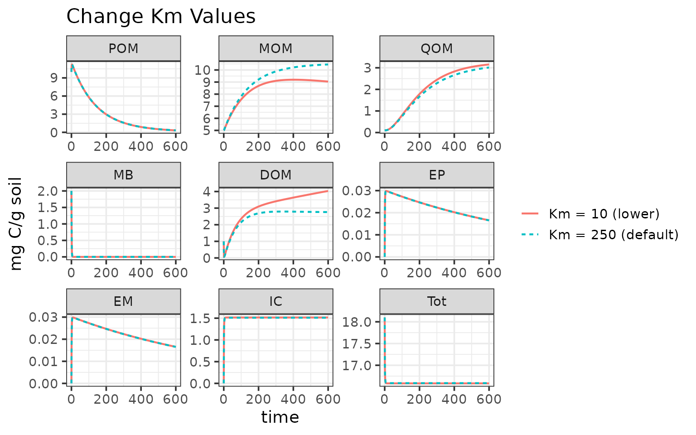
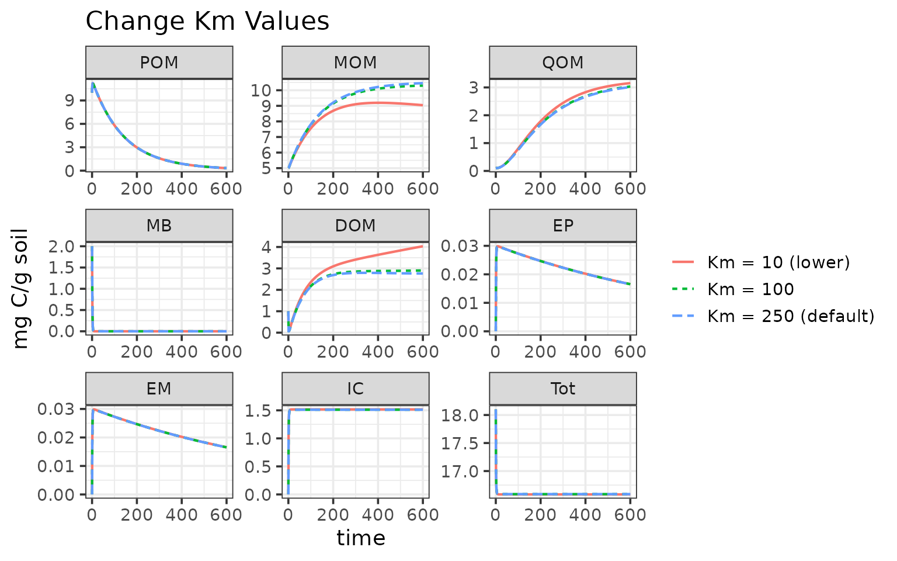

Change Model Parameters
ChangeParams.RmdThis example will show how to update the model parameter values for any MEMC model configuration.
The MEMC package includes default parameter and initial
pool values that are included as package data that are based on Wang et
al. 20151. This example will use these values and
show users how to update these values. We will also be running the MEMC
MEND model configuration.
Default Parameters
Start by taking a look at the default model parameter values.
print(memc_initial_state)
#> POM MOM QOM MB DOM EP EM IC
#> 10.00000 5.00000 0.10000 2.00000 1.00000 0.00001 0.00001 0.00000
#> Tot
#> 18.10002
# Alternatively can use the :: to access the MEMC package data.
# print(MEMC::memc_initial_state)
print(memc_params)
#> parameter description
#> 1 V_p maximum specific decomposition rate for POM by EP
#> 2 K_p half-saturation constant for decomposition of POM
#> 3 V_m maximum specific decomposition rate for MOM by EM
#> 4 K_m half-saturation constant for decomposition of MOM
#> 5 V_d maximum specific uptake rate of D for growth of MB
#> 6 K_d half-saturation constant of uptake of D for growth of MB
#> 7 f_d fraction of decomposed P allocated to DOM
#> 8 g_d fraction of dead B allocated to DOM
#> 9 p_ep fraction of mR for production of EP
#> 10 p_em fraction of mR for production of EM
#> 11 r_ep turnover rate of EP
#> 12 r_em turnover rate of EM
#> 13 Q_max maximum DOC sorption capacity
#> 14 K_ads specific adsorption rate
#> 15 K_des desorption rate
#> 16 dd_beta strength of density dependent microbial decay
#> 17 Input_POM POM input
#> 18 Input_DOM DOM input
#> 19 CUE carbon use efficiency
#> units value
#> 1 mgC mgC^-1 d^-1 14.000
#> 2 mgC / g soil 50.000
#> 3 mgC mgC^-1 d^-1 0.250
#> 4 mg C/g soil 250.000
#> 5 mgC mgC^-1 d^-1 3.000
#> 6 mg C/g soil 0.250
#> 7 <NA> 0.500
#> 8 <NA> 0.500
#> 9 <NA> 0.010
#> 10 <NA> 0.010
#> 11 mgC mgC^-1 d^-1 0.001
#> 12 mgC mgC^-1 d^-1 0.001
#> 13 mgC / g soil 3.400
#> 14 mgC mgC^-1 d^-1 0.006
#> 15 mgC mgC^-1 d^-1 0.001
#> 16 <NA> 1.000
#> 17 mg C 0.000
#> 18 mg C 0.000
#> 19 0.400
# Alternatively can use the :: to access the MEMC package data.
# print(MEMC::memc_params)Run deafult MEMC MEND
Run the pre-configured MEMC MEND model with the default parameter values.
time <- 0:600
mod1 <- MEND_config
out1 <- memc_solve(mod = mod1, time = time)
out1$name <- "Km = 250 (default)"Update parameter value
Users can update the parameters directly via memc_solve.
Any parameter(s) value(s) fed into the memc_solve params
argument will overwrite the parameter values defined the model
configuration.
out2 <- memc_solve(mod = MEND_config, time = time, params = c("K_m" = 10))
out2$name <- "Km = 10 (lower)"
ggplot(data = rbind(out1, out2)) +
geom_line(aes(time, value, color = name, linetype = name), linewidth = 0.75) +
facet_wrap("variable", scales = "free") +
labs(y = "mg C/g soil",
title = "Change Km Values") +
theme(legend.title = element_blank())
Update parameter table using memc_update_params
memc_update_params is a helper function that can change
the parameter values in the parameter table. You will need to set up a
new model configuration with the new parameter table.
new_km <- memc_update_params(new_params = c("K_m" = 100), param_table = memc_params)
# Set up the new model configuration with the
mod_km <- memc_configure(params = new_km,
state = memc_initial_state,
name = "Km = 100",
DOMuptake = "MM",
POMdecomp = "MM",
MBdecay = "LM")
out3 <- memc_solve(mod = mod_km, time = time)
ggplot(data = rbind(out1, out2, out3)) +
geom_line(aes(time, value, color = name, linetype = name), linewidth = 0.75) +
facet_wrap("variable", scales = "free") +
labs(y = "mg C/g soil",
title = "Change Km Values") +
theme(legend.title = element_blank())